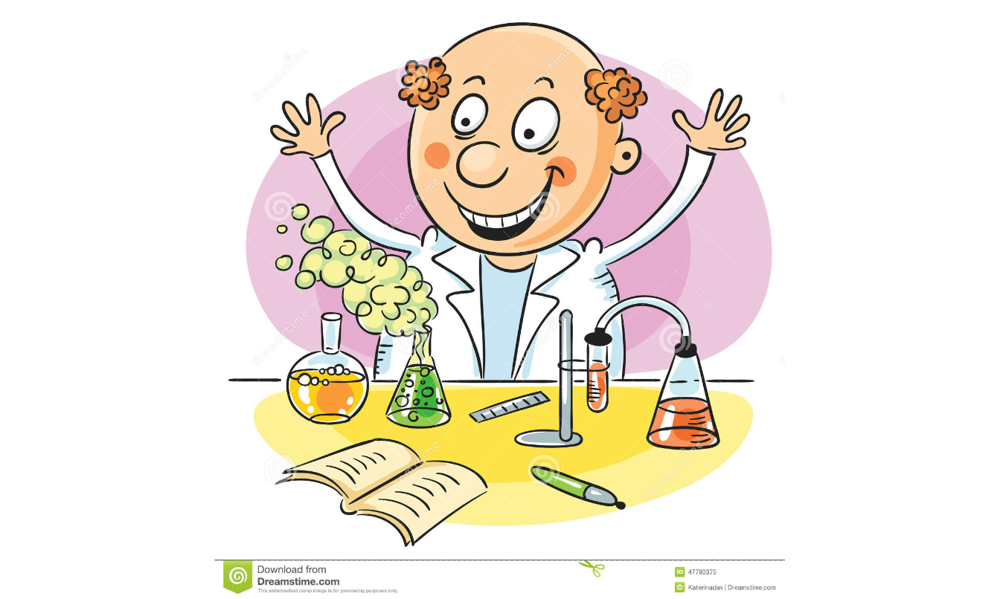
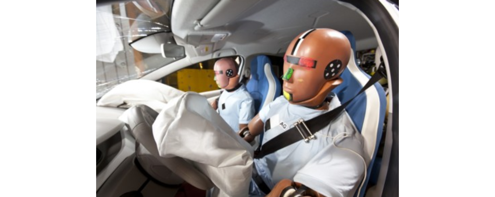

Pruebas no paramétricas
Diseño experimental
Introducción al análisis de varianza

Al iniciar el estudio, el investigador desarrolla una lista de verificación de aspectos:
Objetivos específicos del experimento.
Identificación de los factores que influyen y cuáles de ellos varían y cuáles permanecen constantes.
Características a medir.
Procedimientos particulares para realizar las pruebas o medir las características.
Número de repeticiones del experimento básico a realizar.
Recursos y materiales disponibles.
Las preguntas que centran nuestra atención a través del proceso de diseño incluyen:
¿Cuál es mi objetivo?
¿Qué quiero saber?
¿Por qué quiero saberlo?
Además, existen preguntas de seguimiento productivo para cada actividad en el proceso, tales como:
¿Cómo voy a realizar el experimento?
¿Por que hago el experimento?
Aplicaciones del diseño experimental
Evaluación y comparación de diseños básicos.
Evaluación de materiales alternativos.
Selección de parámetros del diseño para que el producto tenga un buen funcionamiento en una amplia variedad de condiciones de campo.
Definiciones del diseño experimental
- Experimento comparativo
Se utiliza en áreas como biología, medicina, agricultura, ingeniería, sicología y otras ciencias experimentales, en el que se establece más de un conjunto de circunstancias en el experimento para comparar entre sí las respuestas.
- Tratamientos
Conjunto de circunstancias creadas para el experimento, en respuesta a la hipótesis de investigación. Entre los ejemplos de tratamientos se encuentran dietas de animales, producción de variedades de cultivos,temperaturas, tipos de suelo y cantidades de nutrientes.
En un estudio comparativo se usan dos o más tratamientos y se comparan sus efectos en el sujeto de estudio.
- Experimento
La unidad experimental es la entidad física o el sujeto expuesto al tratamiento. La unidad experimental, una vez expuesta al tratamiento,constituye una sola réplica del tratamiento.
- Error experimental
Describe la variación entre las unidades experimentales tratadas de manera idéntica e independiente. Los distintos orígenes del error experimental son:
- La variación natural entre unidades experimentales.
- La variabilidad en la medición de la respuesta.
- La imposibilidad de reproducir las condiciones del tratamiento con exactitud de una unidad a otra.
- La interacción de los tratamientos con las unidades experimentales.
- Cualquier otro factor externo que influya en las características medidas.
Ejemplo
La imposibilidad de reproducir el tratamiento con exactitud se da cuando las réplicas de los tubos de ensayo se preparan de modo independiente, con la misma mezcla de compuestos, y el peso de los productos químicos obtenidos en cada tubo difiere en 0.1 microgramo (pg). Los procesos en pipetas o básculas no son exactos, por lo tanto, introducen una pequeña variación durante la preparación del tratamiento.

Un importante objetivo de los cálculos estadísticos es lograr una estimación de la varianza del error experimental. En su forma más simple, el error experimental es la varianza en unidades de las observaciones del experimento, cuando las diferencias entre éstas se pueden atribuir sólo al error experimental.
- Estudios por observaciones comparativas
Son aquellos para los que desearíamos hacer un experimento, pero no es posible por razones económicas, prácticas o éticas.
El investigador tiene en mente condiciones o tratamientos que tienen efectos causales en sujetos para los que no es posible efectuar experimentos hasta obtener respuestas. Los investigadores de las ciencias sociales, ecología, vida silvestre, vida marina y otros recursos naturales, a menudo han de llevar a cabo estudios por observación en vez de la experimentación directa.
Ejemplo Considerando un estudio para comparar la severidad de las lesiones por accidentes automovilísticos con y sin el cinturón de seguridad puesto; sería clara la falta de ética si se asignara al azar un tratamiento de personas con cinturón y sin cinturón y después se provocaran colisiones de los autos contra una pared de concreto, tampoco habría quién se prestara para esto. En su lugar, los investigadores se apoyan en los datos de lesiones en los accidentes y comparan los datos de cinturón puesto y sin cinturón.

Hipótesis de investigación Establece un conjunto de circunstancias y sus consecuencias. Los tratamientos son una creación de las circunstancias para el experimento. Así, es importante identificar los tratamientos con el papel que cada uno tiene en la evaluación de la hipótesis de investigación.
Relación entre los tratamientos y las hipótesis
Cuando se eligen los tratamientos adecuados en respuesta a una hipótesis de investigación, es posible comprender mejor los procesos físicos, químicos biológicos o sociales.
A continuación se presentan tratamientos, usados en el marco de investigaciones reales, generados por hipótesis de investigación:
- Se estudió la cinética de bebida de las abejas productoras de miel a diferentes temperaturas ambientales, para responder a la hipótesis de que la energía requerida al reunir comida para la colonia era independiente de la temperatura.

- La supervivencia de siembras de Euphorbia (género de plantas) atacadas por un patógeno del suelo se determinó para distintos tipos de tratamientos de fungicida, en respuesta a la hipótesis de que no todos los fungicidas tienen la misma eficiencia para controlar tal patógeno.
- Tratamiento control
Muchas veces se requieren tratamientos adicionales para evaluar por completo las consecuencias de la hipótesis. Una componente importante de muchos diseños de tratamiento es el tratamiento de control.
El tratamiento de control es un punto necesario para evaluar el efecto de los tratamientos experimentales; existen diversas circunstancias en las que el tratamiento de control es útil y necesario. Un control al que no se da tratamiento revelará las condiciones en las que se efectuó el experimento.
- Control local de errores experimentales
Los principales objetivos de la mayoría de los experimentos son las comparaciones claras y exactas entre tratamientos a través de un conjunto apropiado de condiciones.
El control local describe las acciones que emplea un investigador para reducir o controlar el error experimental, incrementar la exactitud de las observaciones y establecer la base de la inferencia de un estudio.
El investigador controla:
- Técnica.
- Selección de unidades experimentales
- Bloquización o aseguramiento de la uniformidad de información en todos los tratamientos.
- Selección del diseño experimental.
- Medición de covariables (son variables relacionadas con la variable respuesta que nos interesa).
- Replicar para obtener experimentos válidos
La réplica implica una repetición independiente del experimento básico, cada tratamiento se aplica de manera independiente a dos o más unidades experimentales. Existen diversas razones para hacer réplicas de un experimento, las más notables son:
- Permiten estimar el error experimental
- Ejerce control sobre la varianza del error experimental
- Mejora la precisión de un experimento mediante la reducción de la desviación estándar de una media de tratamiento
- A mayor número de repeticiones mayor precisión
- Aumenta el alcance de la inferencia (I.C. y pruebas de hipótesis.)
- Las unidades de observación y las experimentales pueden ser claramente distintas
La unidad de observación puede no ser equivalente a la unidad experimental. La primera puede ser una muestra de la última, como muestras individuales de plantas de una parcela.
Ejemplo: Un estudio sencillo de raciones de dieta animal tiene un corral con seis animales asignados a la ración A y otro con seis más asignados a la ración B. Se reúnen datos sobre el aumento de peso. Al final del estudio, se toman de cada animal las medidas necesarias.
Unidad experimental:El corral, porque es la unidad a la que se administró el tratamiento independiente.
Unidades de observación: Los animales en el corral.

- Aleatorizar para tener inferencias válidas
“la sola aleatorización proporciona estimaciones válidas de la varianza del error” (Fisher, 1926) La aleatorización es la asignación al azar de tratamientos a las unidades experimentales, permitiendo:
- La validación del error experimental
- Evita sesgos.
- Garantiza la independencia de los errores.

La aleatorización puede realizarse por medio de muchos métodos algunos de los cuales se describen a continuación:
Diseño Completamente al Azar (DCA)
En este experimento hay igual número de réplicas por tratamiento, con una asignación aleatoria de los tratamientos a las unidades experimentales. El protocolo descrito por Hinkelman y Kempthorne (1994):
En total se tienen N unidades experimentales (UE) homogéneas (N=tr)
con r Unidades experimentales por cada tratamiento t, distribuidas al azar.
Ventajas
Flexibilidad: Cualquier número de tratamientos y cualquier número de réplicas pueden ser usadas, siempre y cuando se tengan suficientes UE homogéneas.
Análisis Estadístico simple: el análisis estadístico es simple ya sea cuando todos los tratamientos tengan igual número de réplicas (balanceado), diferente número de réplicas (desbalanceado) o pérdida de datos, caso en el cual se trata como un análisis desbalanceado.
Máximo número de grados de libertad para el error:dados por la expresión t(r − 1), que corresponden a dos fuentes de variación que son los tratamientos y el error.
Precisión: Es muy preciso si se tienen en cuenta UE homogéneas.
Desventajas
Se puede obtener baja precisión cuando las unidades experimentales no sean muy homogéneas y así ser ineficiente.
Es recomendado cuando gran parte de las UE no respondan al tratamiento o puedan perderse durante el experimento.
Es útil en experimentos en los que el número de UE es limitado, ya que provee el máximo número de grados de libertad del error.